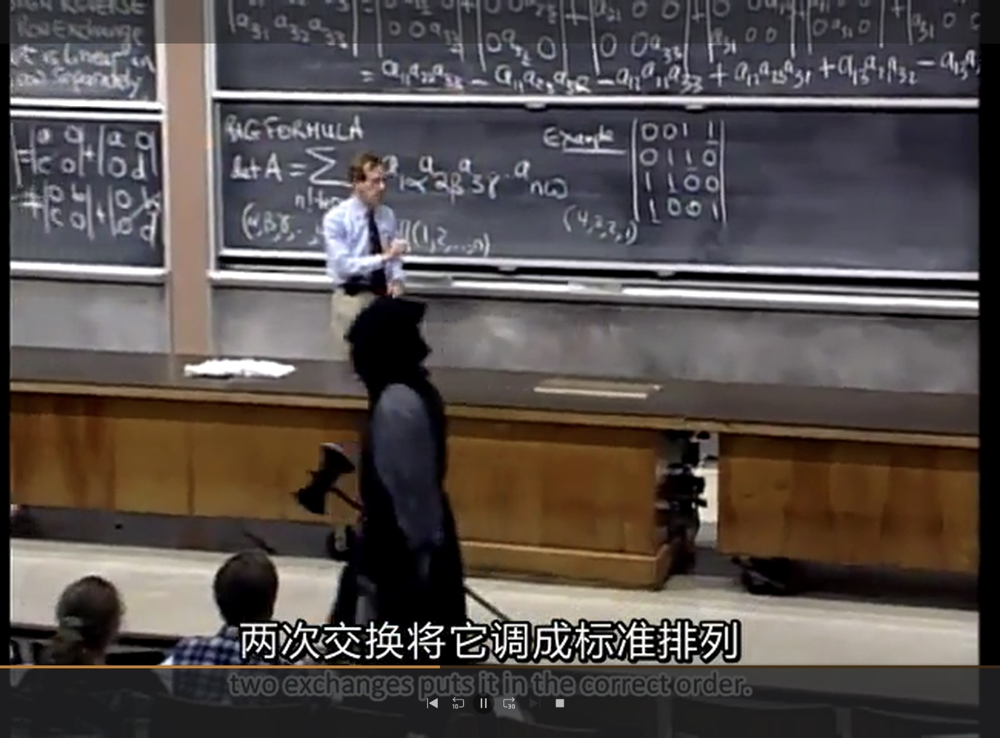

考研始末
1 大三下
决定考研，或者说别无选择只能考研大概是在2022年的夏天。
大三的下学期完全是在一片狼藉之中度过的，疫情防控最严的时候我们甚至很少出房间门，每天的饭菜有人（辛苦志愿者）送到门口。
相册里翻到这样一张梗图：
{kind=link}
什么梗？
这个图有两个梗。
其一是当时隔壁同济大学闹出了“猪肉刺身事件”，红蓝相间的配色就是这个事件的某种旗帜。
其二则是疫情之下，各大高校纷纷缩短假期、增加课时，以期早点放（定时炸弹的）学生们回去。

还翻到一张有生之年头发最长时刻的留影：
{kind=link}
大概可以一瞥当时的精神状态。
就在这样啼笑皆非的生活中，大三结束了，我迎来了最后的暑假。
其实我有想过要不这个暑假去找一份实习，边实习边复习。但在听取了多方建议（感谢霄哥）和仔细权衡之后还是决定孤注一掷，全心复习。
2 暑假
我的复习生活不算高压，甚至有些放松。
记忆比较深刻的一些事物：
- Gilbert Strang的线性代数课上，MIT刀斧手 
- 完成了DIY主机初体验。体验的方式是，把（用2000 ￥从朋友那里买过来的）三手电脑主机完全拆散，然后替换CPU、风扇和SSD之后再重新组装。我也是装机辕了！！
- 陪伴了我一年整的（二手）Xbox天蝎座，挂咸鱼了。含泪小赚200。
- 和霄哥拍了毕业照。
- 通关了《魔法使之夜》，成为月厨。
- 去扬州玩了几天，虽然没在烟花三月，但也是好风景。
{kind=link}
好吧，记忆深刻的事物果然和学习不沾边。
要说学习，大概的进度就是：
- 看完了Gilbert的线性代数课
- 基本做完了李永乐的660
- 看了点徐涛的政治课
- 把《概率论基础》《数理统计》《高等代数简明教程》《工科数学分析》等书看了一遍。
- 背了背单词，看了几篇外刊精选
3 大四上
大四上开学没几天就是中秋节，（年后就没回过家的）我趁此机会回家吃点好的。
大闸蟹警告

可惜2022的中秋有些早了，不是吃蟹最好的季节
然后就开始高强度的复习了。理想中的时间表是这样的：

当然，实际执行起来难度很大。日子就这么一天天过，很快就到了十一月。
{kind=link}
这些老师总算也都混了个脸熟，但是我的复习进度有点危险：
现在是11月12日，我是废物
还剩44天就考试了，现在政治课还没看完，怎么办啊
选自《记录复习日常》
我每天看着zhan同学的圣经，在焦虑和自己的低效之间挣扎。
圣经：学习容易？容易个P
总有一些虚长几岁的社会人士，喜欢摇旗呐喊
说学习是人生最容的事情，容易个p啊
容易你咋没学明白呢？？？
学习，一天不学就没手感了，三天不学就不爱学了，俩礼拜不学之前学的就全忘了，哪容易了？？？
我九点钟的时候，看到有个同学发朋友圈，他在实验室里打游戏，说自己在摸🐟，都九点钟了，你摸什么🐟啊，除了学生谁晚上九点钟打游戏还不心安理得啊？？？
以上圣经出自zhan的破防视频 (https://www.bilibili.com/video/BV1QS4y1v74J)，字字珠玑，我感同身受 😭，特此摘录
4 考前
妈的，我还是阳了。
12月17号左右，我开始感到身体不适。发烧、肌肉酸痛、食欲不振、咳嗽。新冠的典型症状在我身上全部显著。
12月24号，研究生招生考试的第一天。我坐在江湾的阳性考场，耳边此起彼伏都是咳嗽声，监考老师全是大白。第一场政治考试有些混乱，到了考试的时间都还没安顿好。考务老师直接大喇叭一喊，延迟十分钟开场。虽然有点震惊于延迟的随便，但也某种程度上减轻了我的紧张。
12月25号，上午。这场考了数学，寄，不开玩笑真的寄。填空题错了几个，线性代数大题写的依托答辩。
【穿越时空的吐槽：分数129，没达到预期但也没有刚考完的时候想的那么差】。
12月25号，下午。专业课，我的主场啊，虽然有的题我是真的不会，但是总的来说考的还行？
【吐槽：分数117，这才是依托答辩。】
12月25号，晚上。处理实习入职的事情。
【吐槽：虽然但是，无缝衔接实习是不是太拼了？】
5 出分数
跳过人生第一段实习、死亡期末和过年，快进到出分数。
2023年2月21日，平平无奇的下午，实习摸鱼的空挡，我终于查到了分数：389。
{kind=link}
五分钟思想斗争
第一念头：肯定是我阳了没发挥好。
败下阵来：哎，这都是给自己找的借口。
深刻反思：我本来复习的也不是特别认真，活该啊。
转念一想：今年题目是不是很难，会不会降分数啊？
四处打探：先问问其他人。
woc?????：他们分数好高，完蛋了。
一线生机：不对，他们是专硕，数学二、英语二我不是很认可。
四处打探：网上找找数学一、英语一的案例？
woc?????：这些人分数也还是好高。
罢了罢了：找个班上，咱不是读书的料。
就这样，第一段实习结束之后，我迅速找了一家互联网公司实习。小厂，老板欣然接下了我，我也不挑不拣先干了再说。
6 出复试线
次月，3月的17号，平平无奇的下午，坐在旺脉科技的会议室等待HR面试的空挡，我刷出来了分数线：385。
为什么在面试？
结合前文可知，我觉得自己G了就找了一家小厂光速入职。
然后我和我的导师共享了这些信息，他直言“那待遇肯定不会很好吧”，我有点火大。
他又说“那我给你去xxx？你把简历发我”，我内心高呼一声“爹！”
于是我就在2023.3.17 Friday，请了一个假来面试。
过了两分钟，HR来了，我笑得合不拢嘴把喜讯分享给了她。
- 她：“那咱还谈吗？”
- 我：“来都来了！”
谈完我小跑出门。回宿舍的路上，在微信喜大普奔。
煎熬的三天过去，3月21日，在公司写代码的空挡，我刷出来了复试名单。我果然在名单上，可是，欸欸欸欸欸？前两名分别是411分、402分，我位列第三，385分，这是黑幕吧，这绝对是黑幕！中间17分的空挡竟然没有其他人嘛？
虽然很开心，但是真的很难以置信。大概是去南京求的福袋显灵了！
{kind=link}
7 复试
之后就是从零开始准备复试了。
- 把简历增删改查，适应复试的需求
- 十多门专业课和选修课
包括但不限于数学分析、高等代数、概率论、统计推断、回归分析、时间序列分析、统计计算、非参数统计、多元分析、运筹学【图算法】、计算思维【数据结构和算法】
- 英语口语
我准备了很多，但是当我走进7对一的复试考场时我懵了。好在老师也没有问我任何简历上的内容，考完几个题就让我走了。
我还是有些忐忑，因为最后一个题我不是很会，答得非常磕绊，倒数第二个题也不是很舒畅。【TBD，复试工作完全结束之后会分享一下复试的题目】
好在结果还不错，复试顺利通过了：
{kind=link}
{kind=link}
8 写在最后
接下来坐等拟录取公示了，希望后续能顺利毕业、入学。
最新消息
已经收到拟录的取消息了，但是毕业论文进展堪忧，根本写不动，很急。
也祝福各位看官，万事胜意！
此致
Created: July 21, 2023